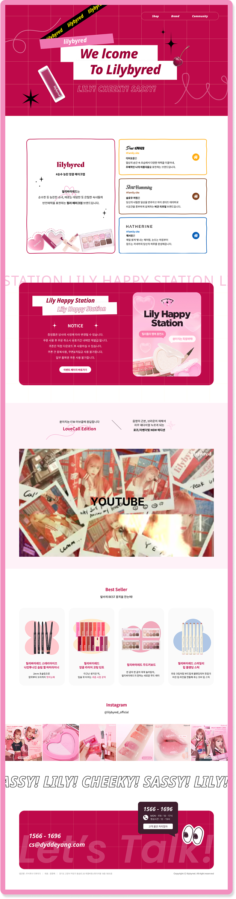
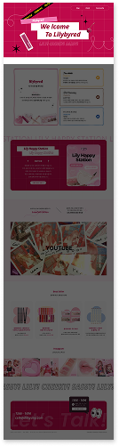
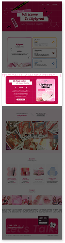
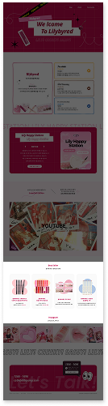

03.
Lilybyred
반응형 웹사이트
- Period
- Type
- Project
- Team
- 2024.05.07 - 2024.05.23
- JavaScript
- 팀 프로젝트
- 공한나, 김나은, 안서희
Overview
선정이유
코스메틱 브 랜드 '릴리바이레드'의 발랄하고 귀여운 이미지에 어울리는
다양한 스크롤 이벤트를 포함한
반응형 웹사이트를 구현하고자 선정하게 되었다.
담당 업무
- 디자인: 메인페이지, shop(서브페이지)
- 퍼블리싱: 메인페이지 web css, css변수 작업
- Github Organization관리
Goal
- 학습한 내용을 적용해 웹사이트를 구현하며 퍼블리싱에 대한 이해도와 숙련도를 향상시키고자 한다.
- JavaScript, jQuery를 이용하여 고난도 반응형 웹사이트를 구현하고자 한다.
- 팀원들과 다양한 의견을 공유하며 협업 능력을 강화하고자 한다.
Keywords
# 사랑스러운
# 생기있는
# 생동감
Prototype
Main Screen
아기자기한 메인페이지
- 귀엽고 발랄한 브랜드의 이미지를 보여주기 위해
css animation, stroke-dashoffset을 사용하여
동적인 느낌을 추가하였습니다.
오브젝트들은 마우스로 이동이 가능해
사용자의 몰입도와 재미를 더했습니다.
간단한 이벤트 소개
- 스크롤 이벤트를 통해 사용자가 필수로 확인해야 하는
공지를 강조하도록 연출하였고,
이벤트 바로가기 버튼으로 빠른 접근이 가능합니다.
YOUTUBE 영상
- 페이지 중간에 자동재생되는 미디어를 넣어
사용자의 몰입도를 증가시키며
자칫 단조로울 수 있는 페이지에 동적인 느낌을 추가합니다.
베스트 셀러
- 마우스 hover 이벤트를 활용해
인기 상품들을 더욱 눈에 띄게하여 구매율을 높입니다.
공식 SNS
- 클릭 시 바로 공식 SNS 게시글로 이동하며,
셀럽의 이미지나 제품 상세 이미지가 담긴
SNS를 통해 홍보효과를 높입니다.




Responsive Screen
Desktop
- min-width:1200px
Table
- min-width:834px, max-width:1999px
Mobile
- max-width:833px
Review
아쉬운 점
- 발표를 한 뒤 나왔던 예약 후에 관련된 질문은 미처 생각해 보지 못했던 부분이라 여러 사용자의 입장에서 생각해 봐야겠다고 느꼈다.
- 추후에 수정을 했지만, 너무 사용자의 편의성만 생각하다 보니 실제로 구현이 힘든 부분을 디자인했다.
성과
- 서로가 부족한 부분을 도와주며 최선의 결과물을 위해 작업했다.
- 정해진 기간 내에 목표했던 웹 움직임을 모두 구현했다.
- setTimeout, mousemove와 같은 javaScript 이벤트를 다같이 공부하고 적용했다.
배운점 및 주관적 의견
수업을 들으며 잘 이해가 가지 않았던 javaScrip,jQuery 활용 능력을 익혔고,
잘 안다고 생각했던 html과 css 부분에서도 나의 부족한 점을 파악하고 배울 수
있었다.
Github Organization을 처음 사용해 보았는데 여러가지 오류를 고치며
팀 작업을 할 때의 Github 사용법에 대해 배울 수 있었다.
자신이 없었던 javaScrip, jQuery가 팀프로젝트를 하며 원하는 효과가 구현이 될 때 재밌다고 느껴지는 순간들이 있었다.
퍼블리싱을 하며 나의 역량에 한계가 보였지만 그만큼 더 발전할 수 있는 기회라고 생각했다.
팀프로젝트를 위해 퍼블리싱 가이드를 제작한 것이 협업에 많은 도움이 되었다.